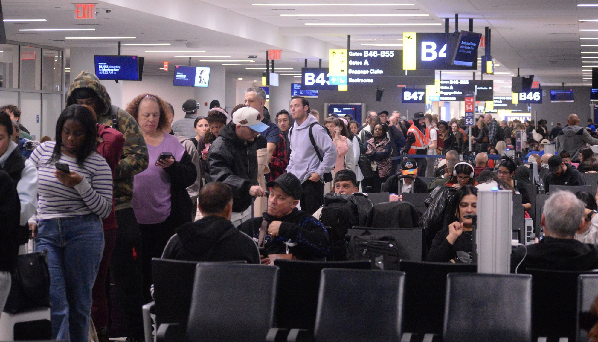
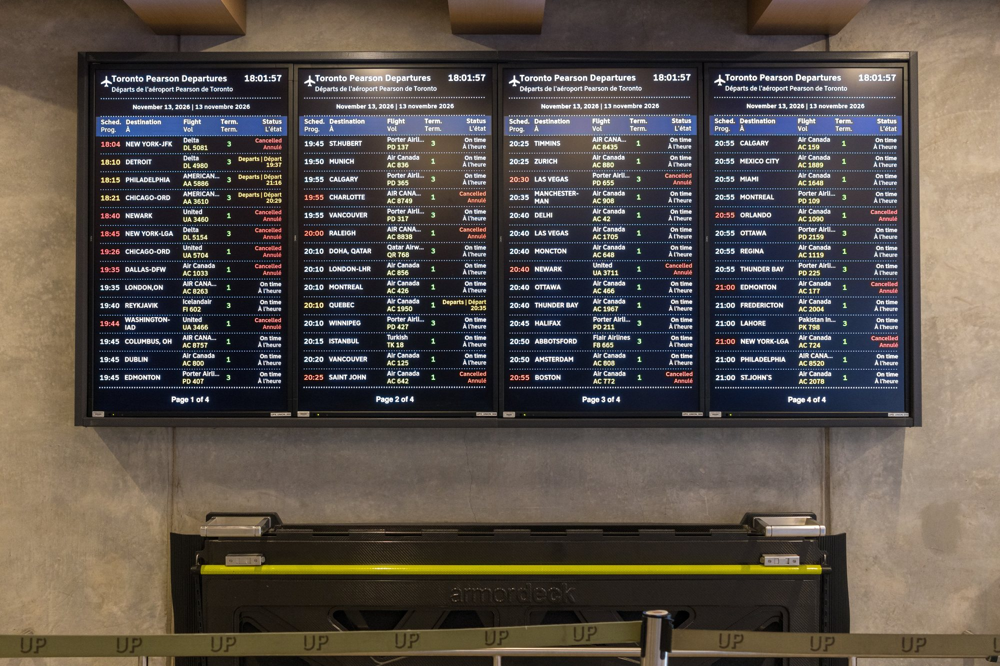
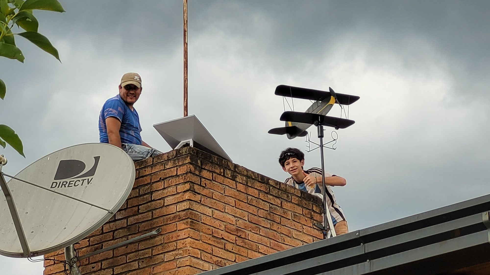

Quattro righe su X, pubblicate lunedì 16 novembre alle 22:47 ora italiana, hanno riportato Starlink al centro di una delle questioni più delicate della politica americana: la rete che tiene in contatto i controllori di volo con gli aerei. «As I was saying … Free Starlinks for FAA were offered to Sec Duffy, but he said they were not needed. As it turns out, they were». Come dicevo, i terminali Starlink gratuiti per la FAA erano stati offerti al segretario Duffy, che aveva risposto che non servivano. A quanto pare, servivano. Il post arriva tre giorni dopo il ground stop nazionale di venerdì 13 novembre, il blocco di tutte le partenze deciso dalla Federal Aviation Administration per un guasto alla sua rete di telecomunicazioni.
Venerdì 13, cinque ore senza decolli
Il guasto comincia venerdì 13 novembre alle 15:30 della costa est, le 21:30 in Italia. La rete FTI, l’infrastruttura di telecomunicazioni che collega i centri di controllo della FAA a radar e stazioni radio in tutto il Paese, viene inondata di dati: mille tentativi di connessione ogni quattro o cinque secondi. Gli apparati più vecchi non reggono. I collegamenti radio con gli aerei e i flussi dei radar diventano instabili in 17 dei 22 centri regionali che gestiscono il traffico in quota, e il disturbo si allarga ad alcuni centri di avvicinamento degli aeroporti.
La FAA ferma tutte le partenze. Circa 3.500 aerei già in volo vengono fatti atterrare, tutti senza incidenti: l’agenzia sottolinea che non si è trattato di un blackout completo, perché alcune frequenze e alcuni radar hanno continuato a funzionare e i voli di soccorso, polizia e militari non si sono mai fermati. Il blocco viene revocato alle 20:15 della costa est, le 2:15 di sabato in Italia. Il conto della giornata è pesante: 12.462 voli cancellati, di cui 9.082 delle grandi compagnie, anche se la FAA precisa che non tutte le cancellazioni sono dovute direttamente al blocco.

Un router in Arkansas
Le prime verifiche portano a due siti periferici: una stazione radar ad Amarillo, in Texas, e un sito di comunicazioni radio a El Dorado, in Arkansas. A El Dorado stava lavorando L3Harris, la società che gestisce e possiede la rete FTI da oltre vent’anni, per sostituire una vecchia linea in rame con una in fibra ottica. Quando il nuovo router è stato acceso, ha cominciato a inondare di dati il resto della rete. L3Harris ha isolato i due siti e la rete si è stabilizzata. Per precauzione la FAA ha disattivato la funzione di trasmissione sul router incriminato e su una sessantina di apparati simili; Duffy ha parlato di 69 router in tutto lo spazio aereo nazionale.
Il segretario ai Trasporti non ha usato giri di parole. Si sta cercando di capire, ha detto, se si sia trattato di un errore di chi ha installato il router o di un apparato difettoso. Il router è ora nei laboratori di L3Harris in Florida, con il personale della FAA presente. L’agenzia non ha trovato alcun indizio di un attacco informatico. L3Harris, in una breve nota, ha ricordato di aver completato oltre il 70% della conversione dal rame alla fibra e di collaborare all’indagine. La FAA ha anche annunciato che rivedrà gli orari di questi lavori, finora svolti di giorno nei siti remoti.

«Come dicevo»: il post del febbraio 2025
Il «come dicevo» di Musk non è una figura retorica. Il post di lunedì cita un suo messaggio del 27 febbraio 2025, quando guidava il DOGE, l’ufficio per l’efficienza della spesa federale. In quei giorni Musk aveva lanciato l’allarme sulla rete del controllo aereo, attribuendone il declino prima a Verizon e poi correggendosi: «the ancient system that is rapidly declining in capability was made L3Harris», il sistema antiquato che sta perdendo rapidamente capacità è di L3Harris, mentre quello nuovo, di Verizon, non era ancora operativo. Verizon aveva vinto nel 2023 un contratto da circa 2,4 miliardi di dollari per modernizzare le telecomunicazioni della FAA.
Nelle settimane successive la FAA confermò di provare alcuni terminali Starlink: tre in una struttura in Alaska, per ripristinare un accesso stabile ai dati meteo per i piloti, e altri nei centri tecnici di Atlantic City e Oklahoma City, insieme a soluzioni via fibra e radio. SpaceX spiegò di aver firmato un accordo proprio con L3Harris per fornire kit e servizio gratuitamente durante un primo periodo di prova, e respinse le voci di un’acquisizione del contratto di Verizon: «Starlink is a possible partial fix to an aging system», una possibile soluzione parziale per un sistema invecchiato, senza alcuna intenzione di prendere il posto di contratti esistenti.
Duffy, allora come oggi, rispose con cautela. Starlink, disse in televisione, è «part of the solution», una parte della soluzione e non la soluzione: utile nei siti remoti, come in Alaska, dove la fibra è difficile da portare, ma la rete deve restare basata su collegamenti in fibra. Nell’estate del 2025 la FAA comunicò al Congresso di non voler sostituire i contratti di L3Harris e Verizon con Starlink.

Starlink avrebbe evitato il blocco?
È la domanda che il post lascia aperta. Musk non ha spiegato come i terminali sarebbero stati usati né dove, e il governo non ha risposto. Il guasto di venerdì, per come lo descrive la FAA, non è stato una perdita di collegamento ma un disturbo interno alla rete terrestre: un apparato che inondava gli altri di richieste. Un collegamento satellitare di riserva avrebbe potuto tenere in piedi alcuni canali, ma solo se integrato nella stessa architettura e protetto dallo stesso tipo di errore. Nessuno, finora, ha dimostrato che un’antenna sul tetto di un centro di controllo avrebbe tenuto in volo i 12.000 voli cancellati.
Resta però un fatto politico. Il blocco ha colpito proprio la rete di L3Harris che Musk aveva indicato come fragile 21 mesi fa, e lo ha fatto durante il passaggio dal rame alla fibra che lo stesso Duffy aveva difeso come lavoro di routine. La FAA, dal canto suo, insiste che non si è trattato di un effetto del grande piano di modernizzazione: nessuna delle strutture già aggiornate con i primi fondi stanziati dal Congresso è andata in crisi, e il problema è nato nel vecchio sistema a commutazione di circuito. Duffy chiede da mesi al Congresso le risorse per un sistema di controllo del traffico aereo completamente nuovo, e il blocco di venerdì è diventato il suo argomento più forte.
Che cosa significa per SpaceX
Per SpaceX la partita è più grande dei terminali gratuiti. Starlink vola già sugli aerei di linea americani per il Wi-Fi di bordo, con una certificazione della FAA per ogni tipo di velivolo, e la versione militare Starshield è entrata nelle reti del Pentagono. Entrare nell’infrastruttura del controllo del traffico aereo civile sarebbe un salto di qualità, ma anche un terreno politicamente minato: nel 2025 i democratici avevano denunciato il possibile conflitto di interessi di Musk, allora consigliere della Casa Bianca, e l’azienda era stata costretta a smentire pubblicamente qualsiasi mira sul contratto di Verizon.
Ora Musk non ha più incarichi di governo e SpaceX è una società quotata in Borsa, ma il tono è lo stesso: una frase secca, rivolta a un ministro in carica, nel momento in cui Washington discute come pagare la prossima rete del controllo aereo. Le prossime tappe da seguire sono tre: l’esito dell’indagine su El Dorado e Amarillo, un’eventuale risposta di Duffy o della FAA all’accusa e le scelte sulla nuova rete, dove il satellite potrebbe tornare in gioco come canale di riserva per i siti più isolati.
La breaking di ieri su Starship V4 e sul possibile nuovo volo di Ship 42 passa all’archivio ed è disponibile nel dossier dedicato; il catch della nave è raccontato nel dossier su Mechazilla che prende Ship 42.
Fonti pubbliche e tracce
Ultimo aggiornamento editoriale: 17 novembre 2026 alle 9:20 (ora italiana). Nel corpo non si ripete la fonte a ogni frase: le tracce sono raccolte qui. Orari espressi in ora italiana salvo dove indicato come ora della costa est degli Stati Uniti.
- Elon Musk su X, 16 novembre 2026, 22:47: «Free Starlinks for FAA were offered to Sec Duffy, but he said they were not needed. As it turns out, they were», con citazione del post del 27 febbraio 2025.
- Elon Musk su X, 27 febbraio 2025, 20:24: correzione «the ancient system that is rapidly declining in capability was made L3Harris», il nuovo sistema di Verizon non ancora operativo.
- FAA, Nationwide Ground Stop: Questions and Answers, 15 novembre 2026: orari del blocco, mille tentativi di connessione ogni 4 o 5 secondi sulla rete FTI, siti di Amarillo ed El Dorado, 17 centri su 22, circa 3.500 aerei atterrati, 12.462 voli cancellati (9.082 delle grandi compagnie), nessun indizio di attacco informatico, funzione disattivata su circa 60 router, revisione degli orari dei lavori.
- Dipartimento dei Trasporti degli Stati Uniti, conferenza stampa di Sean Duffy e Bryan Bedford, 14 novembre 2026: passaggio dal rame alla fibra, L3Harris proprietaria della rete, ipotesi di errore di installazione o router difettoso.
- ABC News, 15 novembre 2026: Duffy a «This Week», router nel laboratorio di L3Harris in Florida, 69 router con trasmissione disattivata.
- L3Harris, dichiarazione sul ground stop, 14 novembre 2026: oltre il 70% della conversione dal rame alla fibra completato, collaborazione all’indagine.
- Reuters, 5 marzo 2025: test Starlink in Alaska, Atlantic City e Oklahoma City, dichiarazione di SpaceX «possible partial fix», Duffy «part of the solution», contratto Verizon da 2,4 miliardi.
- Quartz, marzo 2025: accordo tra SpaceX e L3Harris per kit e servizio gratuiti nel periodo di prova.
- Teslarati, 16 novembre 2026: contesto del post di Musk, nessuna risposta pubblica del Dipartimento dei Trasporti, comunicazione della FAA al Congresso del luglio 2025.
- Benzinga, 17 novembre 2026: la FAA non ha risposto alla richiesta di commento sul post.
Fotografie utilizzabili
Le tre fotografie del blocco del 13 novembre (Chicago O’Hare, New York JFK, Toronto) sono immagini dell’evento pubblicate su Wikimedia Commons con licenza libera (CC0 e CC BY-SA 4.0). Il terminale Starlink è un’immagine d’archivio a licenza CC BY 4.0, usata per mostrare il tipo di antenna di cui si parla. Dettagli in scheda dei crediti fotografici.
Apri il dossier su Starship V4 e Ship 42, archiviato · Archivio Notizie · Torna a SpaceX